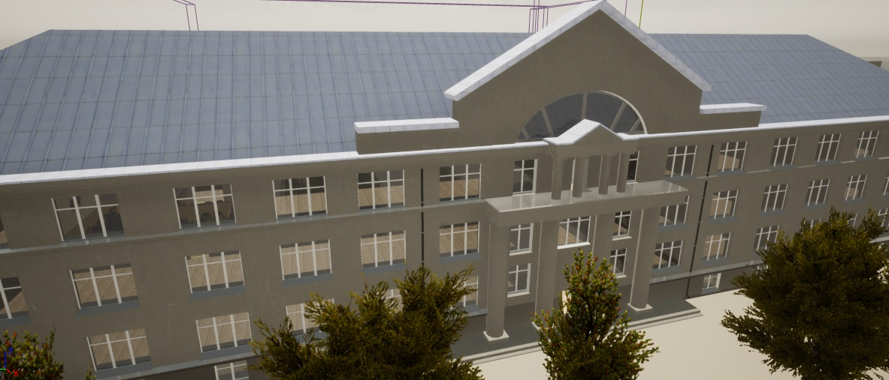

Pradžia
3D Vaizdo žaidimas "EIF MUZIEJUS"
Apie projektą
Projekto tikslas sukurti Vilniaus kolegijos Elektronikos ir informatikos fakulteto (EIF) 3D vaizdo žaidimą:
Sukurti interaktyvų muziejų su galimybe perklausyti muziejaus eksponatų garso įrašus ir atvaizduoti aprašymą (Progresas į pabaigą). Sukurti 3D modelius: auditorijas, kabinetus ir išorinius pastatus. Jau sukurta: skaitykla, biblioteka, programinės įrangos katedra, 202 aud., Simono Daukanto gimnazija, Seimo viešbutis ir kt. Pasidalinti 3D modeliais, garso įrašais, tekstais ir kita medžiaga su studentais (idėjos kas gali būti įgyvendinta visada laukiamos). Sukurti Web servisą, kurio pagalba studentai galėtų kurti aplikacijas (web, mobile ir kt.).Bandomoją žaidimo versiją gali išbandyti jau dabar!
 ATSISIŲSTI (Windows x64)
ATSISIŲSTI (Windows x64)
Pastaba! Reikia galingesnio kompiuterio turinčio neintegruotą 2GB VRAM vaizdo plokštę.
Eksponatai
Šiuos eksponatus galite rasti Vilniaus kolegijos elektronikos ir informatikos fakultete elektronikos muziejuje. Žemiau galite rasti trumpus aprašymus bei 3D modelius peržiūrėti naršyklėje tiesiog paspaudus ant paveikslėlio ir pasukinėjant į šoną. Taip pat yra pridėti ir garso įrašai apie kiekvieną eksponatą. Norintiems pasivaikščioti po kolegiją ir muziejų galite atsisiųsti bandomąją vaizdo žaidimo versiją Windows x64 platformai čia.
Laboratorinis detektoriaus maketas Lietuva 1976 m.
CEO & Founder
Laboratorinis maketas buvo naudojamas laboratorinių darbų metu signalų ir grandinių laboratorijoje.
Nešiojamas AK Acer AnyWare 1100LX Taivanas 1991m.
Designer
IBM suderinamas nešiojamas kompiuteris. CPU (procesorius) - Intel 80386SX16 16 Mhz, Operatyvioji atmintis 5MB, Kietasis diskas HDD - 120 MB, lanksčiųjų diskelių įrenginys - 3.5, ekranas - monochrominis skiriamoji geba 640x480, operacinė sistema DOS, Windows 3.1. Svoris 6 kg, kaina - 4500$.
Laboratorinis varžynas MSP-60 TSRS 1956 m.
Architect
Laboratorinis varžynas (varžų rinkinys) skirtas sukurti reikiamos varžos elementus sudarant įvairias elektrines grandines. Bendra važa nuo 0.01 omo iki 10 kilo omų
Perfokorta Lietuva 1960 m.
Architect
Perfokorta - duomenų laikmena, kurią naudoja automatizuotos sistemos. Tai stačiakampio formos kortelė, pagaminta iš plono kartono. Informacija joje užrašoma išmušant skylutes. Patento savininkas IBM. Laikmeną plačiai naudojo programuotojai iki 1980 m.
Feritinė atminties matrica TSRS 1960 m.
Architect
Feritinė matrica, kurioje kiekvienas feritinis žiedelis galėdavo atsiminti 1 bitą. Matricos talpa apie 1024 bitus. Patento savininkas IBM, tačiau ji buvo gaminama visame pasaulyje, dažniausiai aptinkama Japonijoje iki 1975 m. Naudota kaip vaizdinė priemonė aiškinant atminties veikimo principą.
Oscilografas S1-19A TSRS 1972 m.
Architect
Analoginis - lempinis oscilografas, skirtas tirti iki 50 voltų amplitudes ir iki 1Mhz (megaherco) dažnio signalams.
Kurėjams
Apačioje rasite atsisiųsti modelius naudojamus EIF MUZIEJAUS vaizdo žaidime 3D formatu, modeliai skirti asmeniniam naudojimui. Turintiems idėju ir norintiems prisijungti prie projekto kreipkitės el. paštu: m.gzegozevskis@gmail.com.
- Bazinis paketas
- Unreal engine 4.25 ver., 3D modelių formatas ".uasset"
- Pagalba el. paštu: m.gzegozevskis@gmail.com
- Tik asmeniniam naudojimui
- 100% nuolaida
- Pasiūlymas laikas neribotas
-
Nemokamai
3D modeliai (48 vnt.)
- Pro paketas
- 3D modelių failai ".blend" formatas
- Pagalba el. paštu: m.gzegozevskis@gmail.com
- Tik asmeniniam naudojimui
- 100% nuolaida
- Pasiūlymo laikas ribotas
-
Nemokamai
3D modeliai (48 vnt.)
E-MAIL: m.gzegozevskis@gmail.com